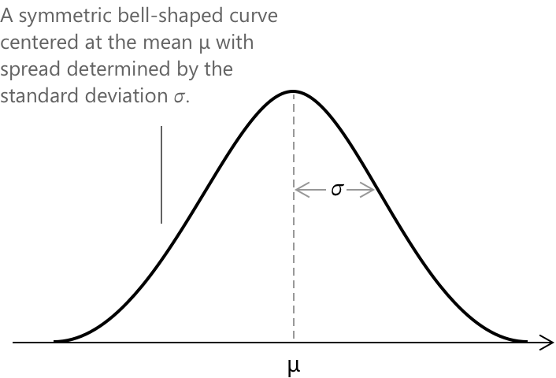
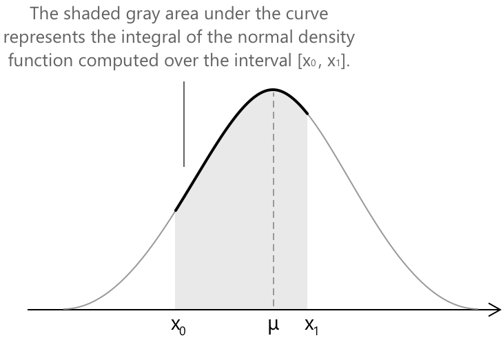
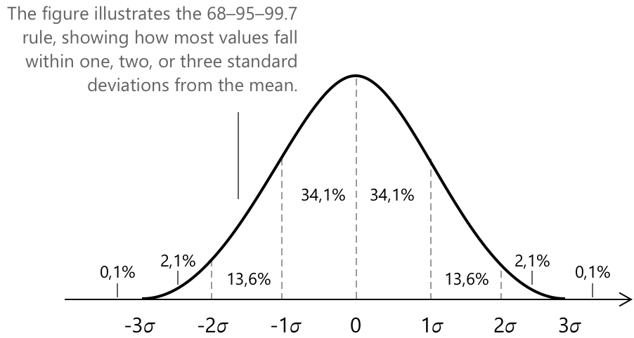

Нормальний розподіл
Означення нормального розподілу
Нормальний розподіл, також відомий як розподіл Гаусса, є одним із найважливіших неперервних розподілів ймовірностей як у теорії ймовірностей, так і в статистиці. Він відіграє центральну роль у моделюванні реальних явищ, де значення мають тенденцію групуватися навколо середнього, за характерною кривою у формі дзвона. Математично нормальний розподіл визначається двома параметрами: середнім \( \mu \), яке визначає центр розподілу, та середньоквадратичним відхиленням \( \sigma \), яке контролює його розсіювання. Зазвичай його позначають як:
\[ \mathcal{N}(x; \mu, \sigma) \]
Як було зазначено раніше, нормальний розподіл має характерну форму дзвона і має набір чітко визначених математичних властивостей, які роблять його унікальним серед неперервних розподілів ймовірностей.

- Загальна площа під кривою дорівнює \(1\). Це означає, що інтеграл від її функції щільності ймовірності по всій дійсній прямій, від \( -\infty \) до \( +\infty \), дорівнює \(1\).
- Крива симетрична відносно середнього \( \mu \). Іншими словами, вона виглядає однаково з обох боків від середнього, причому половина загальної ймовірності лежить ліворуч, а інша половина — праворуч.
- Крива має дві точки перегину, розташовані в \( x = \mu + \sigma \) та \( x = \mu – \sigma \). У цих точках кривизна графіка змінює знак, позначаючи перехід між опуклою та вогнутою областями розподілу.
- Крива є асимптотичною до осі x для значень \( x \), що віддаляються від середнього.
Ключові особливості
-
\[\text{1. } \quad \mathcal{N}(x; \mu, \sigma) = \frac{1}{\sigma \sqrt{2\pi}} \exp\!\left( -\,\frac{(x - \mu)^{2}}{2\sigma^{2}} \right) \]
-
\[\text{2. } \quad \mu = E(X) = \mu \]
-
\[\text{3. } \quad \sigma^{2} = \mathrm{Var}(X) = \sigma^{2} \]
-
\[\text{4. } \quad \sigma = \sigma \]
Кожен вираз підкреслює ключову властивість нормального розподілу, показуючи, як його форма дзвона повністю визначається середнім \(\mu\) та середньоквадратичним відхиленням \(\sigma\), які контролюють його центр і розсіювання.
Функція щільності ймовірності нормального розподілу
Випадкова змінна \( X \), що має нормальний розподіл, називається нормальною випадковою змінною. Вона представляє собою неперервну випадкову змінну, ймовірності якої описуються нормальною функцією щільності ймовірності, що визначається як:
\[ \mathcal{N}(x; \mu, \sigma) = \frac{1}{\sqrt{2\pi} \,\sigma} \, e^{-\frac{1}{2\sigma^2}(x – \mu)^2} \]
\[-\infty < x < +\infty\]
Ця функція описує, як ймовірність розподіляється за можливими значеннями неперервної випадкової змінної \( X \), залежно від середнього \( \mu \) та середньоквадратичного відхилення \( \sigma \). Щоб глибше вивчити поняття середнього (або математичного сподівання), дисперсії та середньоквадратичного відхилення випадкової змінної (дискретної або неперервної), зверніться до наступних пов'язаних тем:
- 871 Середнє або математичне сподівання випадкової змінної
- 866 Дисперсія та коваріація випадкової змінної
Як було обговорено вище, інтеграл від функції нормальної щільності по всій дійсній прямій, від \( -\infty \) до \( +\infty \), дорівнює 1:
\[ \frac{1}{\sqrt{2\pi}\,\sigma} \, \int_{-\infty}^{+\infty} e^{-\frac{1}{2\sigma^2}(x – \mu)^2} \, dx = 1 \]
З інтеграла випливає, що якщо ми хочемо обчислити площу під кривою між двома точками \( x_0 \) та \( x_1 \), ми повинні обчислити визначений інтеграл від функції нормальної щільності на цьому проміжку.

Інтуїтивно випливає, що заштрихована область під кривою представляє ймовірність того, що випадкова змінна \( X \) набуває значення в проміжку \([x_0, x_1]\). Іншими словами, інтеграл функції щільності нормального розподілу на цьому інтервалі кількісно визначає ймовірність спостереження \( X \) між цими двома граничноюми значеннями. Формально, ймовірність того, що випадкова змінна \( X \) набуває значення між \( x_0 \) та \( x_1 \), задається як:
\[ \begin{align} P(x_0 < X < x_1) &= \int_{x_0}^{x_1} n(x; \mu, \sigma)\,dx \\[6pt] &= \frac{1}{\sqrt{2\pi}\,\sigma} \int_{x_0}^{x_1} e^{-\frac{1}{2\sigma^2}(x - \mu)^2}\,dx \end{align} \]
Стандартний нормальний розподіл
Щоб спростити обчислення ймовірностей і зробити їх більш загальними, нормальний розподіл часто переписують у стандартизованій формі. У цьому процесі початкова змінна \( X \) перетворюється на нову змінну \( Z \), яка визначається як:
\[ Z = \frac{X - \mu}{\sigma} \]
Ця нова змінна \( Z \) має так званий стандартний нормальний розподіл — особливий випадок, коли середнє значення дорівнює \( 0 \), а стандартне відхилення дорівнює \( 1 \). Завдяки стандартизації ми можемо працювати з єдиною універсальною кривою та використовувати стандартну Z-таблицю нормального розподілу для знаходження ймовірностей замість обчислення інтеграла для кожного конкретного розподілу. На практиці будь-який нормальний розподіл може бути перетворений на стандартний, що значно спрощує порівняння та обчислення.
Значення, наведені в Z-таблицях, представляють кумулятивну площу під кривою стандартного нормального розподілу ліворуч від заданого значення \( Z \).
Розглянемо ще раз випадок ймовірності, визначеної на довільному проміжку \([x_0, x_1]\). Її можна виразити як:
\[ \begin{align} P(x_0 < X < x_1) &= \frac{1}{\sqrt{2\pi}\,\sigma} \int_{x_0}^{x_1} e^{-\frac{1}{2\sigma^2}(x – \mu)^2}\,dx \end{align} \]
Якщо ми перетворимо змінну \( X \) у її стандартизовану форму, інтервал \( P(x_0 < X < x_1) \) можна переписати через стандартну змінну \( Z \) як:
\[ P(x_0 < X < x_1) = P\left( \frac{x_0 - \mu}{\sigma} < Z < \frac{x_1 – \mu}{\sigma} \right) \]
де змінна \( X \) була замінена її стандартизованою формою \( Z \), а границі \( x_0 \) та \( x_1 \) були замінені відповідними стандартизованими значеннями. Це перетворення дозволяє нам виразити ймовірність у рамках стандартного нормального розподілу, де \( Z \) має розподіл із середнім \( 0 \) та стандартним відхиленням \( 1 \). Виходячи із загальної форми ймовірності на проміжку \([x_0, x_1]\), маємо:
\[ \begin{align} P(x_0 < X < x_1) &= \frac{1}{\sqrt{2\pi}\,\sigma} \int_{x_0}^{x_1} e^{-\frac{1}{2\sigma^2}(x – \mu)^2}\,dx\\[6pt] &=\frac{1}{\sqrt{2\pi}\,\sigma} \int_{z_0}^{z_1} e^{-\frac{1}{2}(z)^2}\,dx = P(z_0 < Z < z_1) \end{align} \]
Таке формулювання підкреслює, як процес стандартизації забезпечує прямий зв'язок між будь-яким нормальним розподілом і стандартною нормальною кривою, що дозволяє визначати ймовірності за допомогою універсальних еталонних значень \( Z \).
Правило трьох сигм
У нормальному розподілі ймовірності симетрично розташовані відносно середнього значення.
Існує фундаментальний зв'язок між цими ймовірностями та їхньою відстанню від середнього, відомий як правило 68–95–99,7 або правило трьох сигм, яке описує, як більша частина ймовірнісної маси зосереджена біля центру розподілу.

- Приблизно 68% усіх значень потрапляють у межі одного стандартного відхилення від середнього, при цьому близько 34,1% з кожного боку.
- Розширення діапазону до двох стандартних відхилень охоплює приблизно 95% даних.
- Розширення діапазону до трьох стандартних відхилень охоплює близько 99,7% усіх можливих значень.
Центральна гранична теорема
Нехай \( X_1, X_2, \dots, X_n \) — послідовність незалежних і однаково розподілених випадкових величин, кожна з яких має математичне сподівання \( E[X_i] = \mu \) та скінченну дисперсію \( \mathrm{Var}(X_i) = \sigma^2 > 0 \). Визначимо їхнє вибіркове середнє як:
\[ \bar{X}_{n} = \frac{1}{n} \sum_{i=1}^{n} X_i \]
У міру того, як кількість спостережень \( n \) зростає, розподіл стандартизованої змінної \(Z\)
\[ Z = \frac{\bar{X}_n – \mu}{\sigma / \sqrt{n}} \]
поступово наближається за законом до стандартного нормального розподілу згідно з відношенням:
\[ \frac{\bar{X}_n - \mu}{\sigma / \sqrt{n}} \xrightarrow{d} \mathcal{N}(x; 0,1) \quad \text{при } n \to \infty \]
Іншими словами, незалежно від початкового розподілу випадкових величин, розподіл їхнього середнього значення має тенденцію ставати приблизно нормальним зі збільшенням розміру вибірки. Цей результат пояснює, чому нормальний розподіл так часто зустрічається в статистиці: він виступає як гранична модель поведінки середніх значень, коли кількість спостережень є достатньо великою.
Позначення \( \xrightarrow{d} \) означає «збіжність за розподілом», що означає, що розподіл ймовірностей стандартизованої змінної поступово наближається до стандартного нормального розподілу зі збільшенням \( n \).
Вибрана література
-
L. Wasserman. All of Statistics (free PDF draft)
-
J. Blitzstein, J. Hwang. Introduction to Probability
-
MIT OpenCourseWare. Introduction to Probability and Statistics
-
OpenStax. Introductory Statistics 2e
-
Penn State (STAT 414). Probability Theory – Normal Distribution
-
University of Berkeley. Statistics
-
University of Oxford. Statistics Lecture Notes – Normal Distribution
-
NIST/SEMATECH. Engineering Statistics Handbook – Normal Distribution